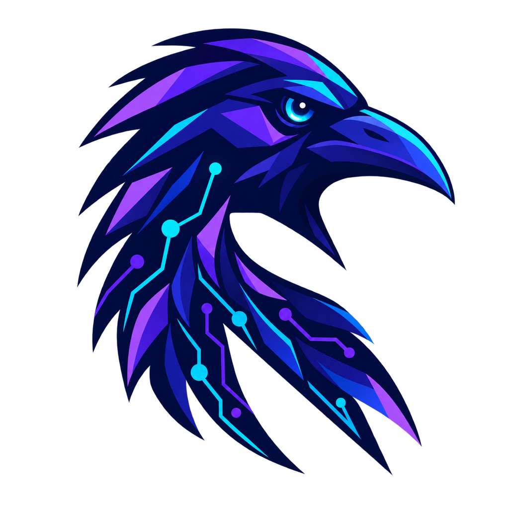

01
Noble foundation
Ubuntu 24.04 LTS packages across main, restricted, universe, and multiverse.
SECURITY REPOS ENABLED
OPEN-SOURCE · LINUX · AMD64
A Debian-family Linux distribution taking shape for AI builders, robotics developers, and the next generation of intelligent systems.
AI and robotics work should begin with an idea—not a lost afternoon assembling the workstation beneath it.
Ravan OS is working toward a reproducible environment where development tools, robot middleware, simulation, computer vision, and edge workflows belong together from the start.
Today, the project creates a lightweight Ubuntu Noble live system with XFCE. Tomorrow’s specialized toolchain will be built in the open, with the community.
Everything listed here exists in the current checked-in image configuration. Future AI and robotics packages are kept honestly in the roadmap.
Ubuntu 24.04 LTS packages across main, restricted, universe, and multiverse.
SECURITY REPOS ENABLEDA fast, focused graphical workspace with LightDM and custom Ravan artwork.
LIGHTWEIGHT BY DESIGNGeneric Linux kernel, systemd, NetworkManager, PipeWire, and WirePlumber.
CONNECTED & READYGit, cURL, Wget, Vim, Nano, OpenSSH client, htop, and everyday desktop tools.
USEFUL FROM FIRST BOOTAn amd64 ISO-hybrid with a compressed SquashFS filesystem, designed for safe testing in a virtual machine before hardware.
Direction, not promises. The roadmap shows where contributors can have the greatest impact.
Harden the live image, unify branding, document builds, automate smoke tests, and establish release checksums.
IN PROGRESSReproducible development environments, containers, Python tooling, notebooks, and a dependable package baseline.
PLANNEDROS 2, simulation, visualization, computer vision, device workflows, and tested sensor integrations.
PLANNEDImproved GPU enablement plus carefully validated support for cameras, accelerators, and edge-computing boards.
FUTUREA deliberately small configuration surface. Packages, hooks, visuals, and boot behavior each have a clear home.
Use an amd64 Linux host with sudo access, internet connectivity, at least 15 GB free storage, and 4 GB RAM for comfortable VM testing.
# Install the build and test toolchain
$ sudo apt update
$ sudo apt install live-build debootstrap \
syslinux isolinux xorriso qemu-system-x86
# Clone the image definition
$ git clone https://github.com/\
kolithawarnakulasooriya/Ravan-OS.git
$ cd Ravan-OS
# Build the live ISO
$ sudo lb build 2>&1 | tee raven-build.log
# Boot-test with QEMU/KVM
$ ./test-build.shHeads up: The configuration uses a legacy live-build format and build-host versions can affect compatibility. Review generated files before committing changes.
Documentation, packaging, hardware testing, UI work, release engineering, and architecture ideas can all move Ravan OS forward.
Create one focused branch for one coherent change.
Document the reason for your change and keep it reproducible.
Rebuild affected images and boot-test in QEMU or safe hardware.
Share your test environment, evidence, and known limitations.
Ravan OS is experimental pre-release software. Expect incomplete features, breaking changes, and branding inconsistencies while the platform matures.
Do not use it for production, sensitive data, or safety-critical robotics.